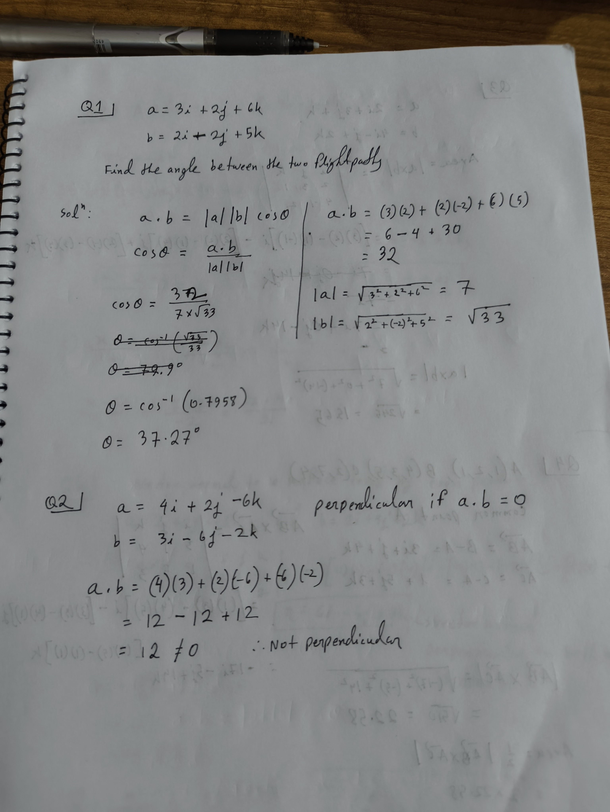
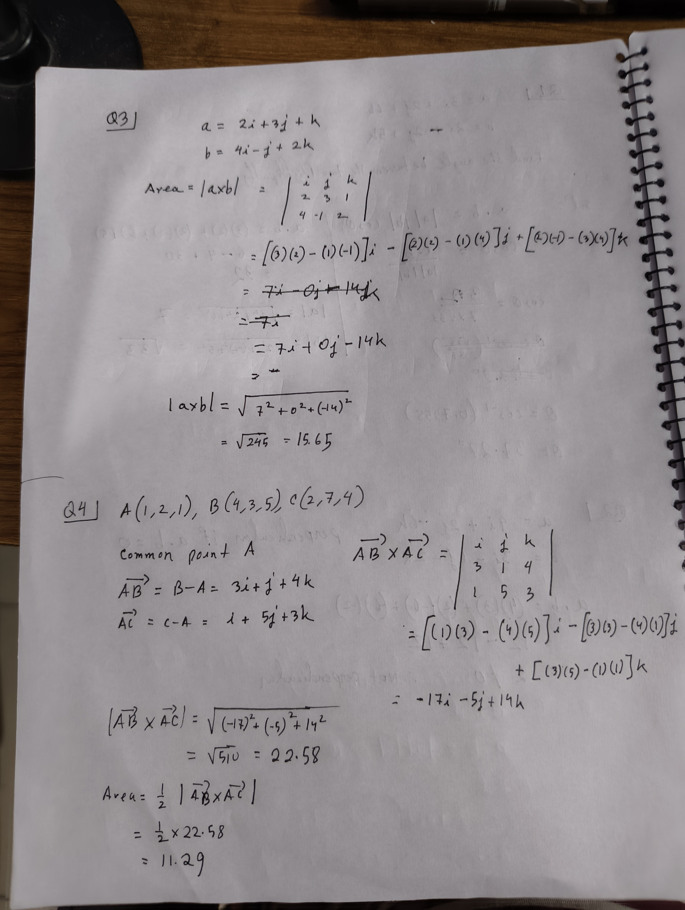
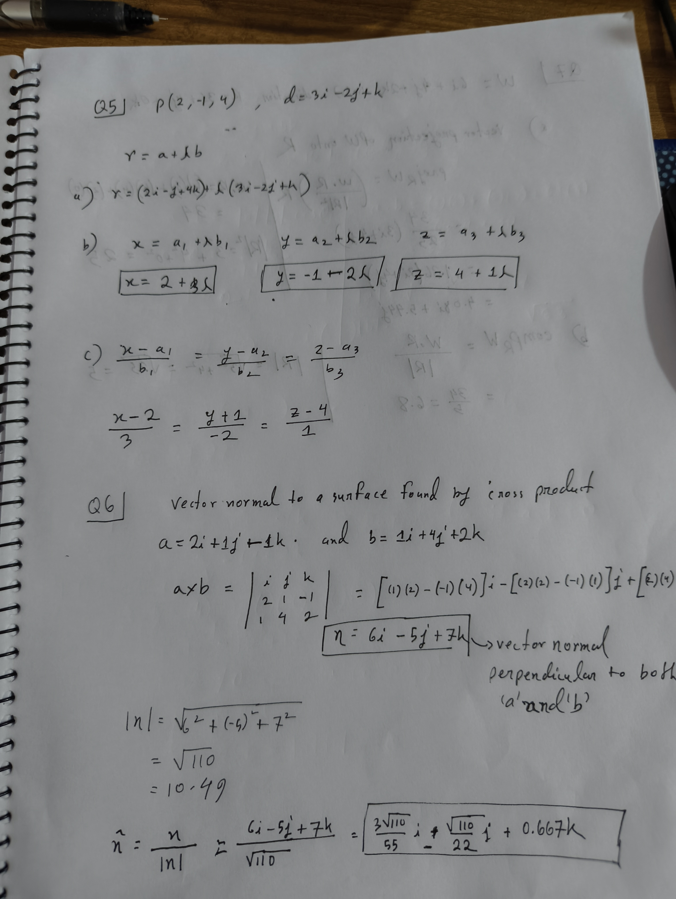
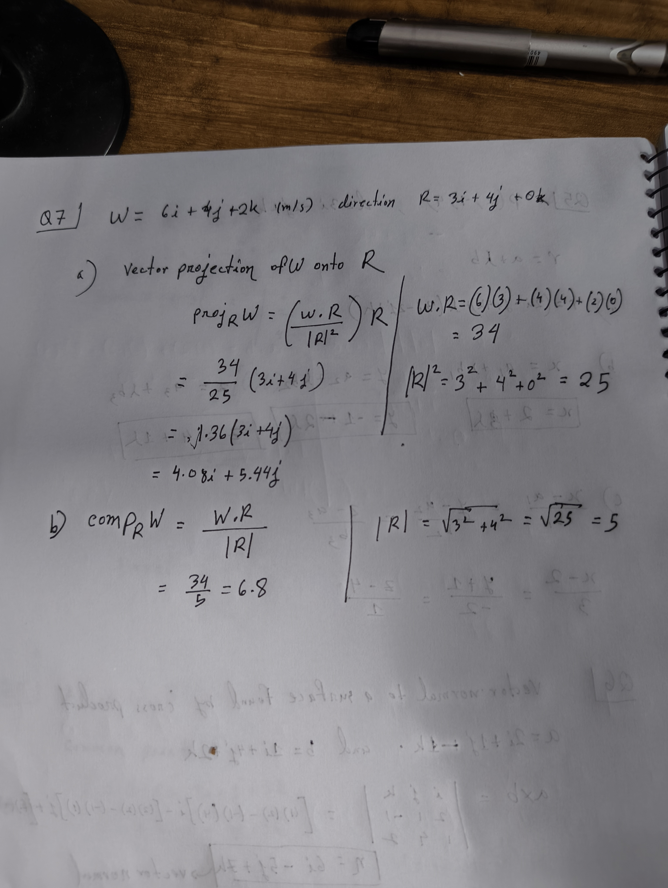

← Back to Notes Index
Practice Problems: Vectors
MATH-2201 — Unit 01 · worked solutions with handwritten scans
Q1. Angle Between Two Vectors Dot Product
Two aircraft depart simultaneously from the same airport. Their flight directions are
represented by the vectors \(\mathbf{a} = 3\mathbf{i} + 2\mathbf{j} + 6\mathbf{k}\) and
\(\mathbf{b} = 2\mathbf{i} - 2\mathbf{j} + 5\mathbf{k}\).
Find the angle between the two flight paths.
Solution
Use \(\mathbf{a}\cdot\mathbf{b} = |\mathbf{a}|\,|\mathbf{b}|\cos\theta \;\Rightarrow\; \cos\theta = \dfrac{\mathbf{a}\cdot\mathbf{b}}{|\mathbf{a}|\,|\mathbf{b}|}\).
$$ \mathbf{a}\cdot\mathbf{b} = (3)(2) + (2)(-2) + (6)(5) = 6 - 4 + 30 = 32 $$
$$ |\mathbf{a}| = \sqrt{3^2 + 2^2 + 6^2} = \sqrt{49} = 7, \qquad |\mathbf{b}| = \sqrt{2^2 + (-2)^2 + 5^2} = \sqrt{33} $$
$$ \cos\theta = \frac{32}{7\sqrt{33}} \approx 0.7958 $$
\(\theta = \cos^{-1}(0.7958) \approx 37.27^\circ\)
📝 View handwritten note (Q1–Q2)

Q2. Test for Perpendicularity Dot Product
A robotic arm has two connecting rods represented by
\(\mathbf{a} = 4\mathbf{i} + 2\mathbf{j} - 6\mathbf{k}\) and
\(\mathbf{b} = 3\mathbf{i} - 6\mathbf{j} - 2\mathbf{k}\).
Show whether the rods are perpendicular.
Solution
Two vectors are perpendicular if and only if \(\mathbf{a}\cdot\mathbf{b} = 0\).
$$ \mathbf{a}\cdot\mathbf{b} = (4)(3) + (2)(-6) + (-6)(-2) = 12 - 12 + 12 = 12 $$
\(\mathbf{a}\cdot\mathbf{b} = 12 \neq 0\) ⟹ the vectors are not perpendicular.
📝 View handwritten note (Q1–Q2)
Q3. Area of a Parallelogram Cross Product
Two supporting beams of a rectangular solar panel are represented by
\(\mathbf{a} = 2\mathbf{i} + 3\mathbf{j} + \mathbf{k}\) and
\(\mathbf{b} = 4\mathbf{i} - \mathbf{j} + 2\mathbf{k}\).
Find the area of the parallelogram formed by the two beams.
Solution
Area \(= |\mathbf{a}\times\mathbf{b}|\).
$$ \mathbf{a}\times\mathbf{b} = \begin{vmatrix} \mathbf{i} & \mathbf{j} & \mathbf{k} \\ 2 & 3 & 1 \\ 4 & -1 & 2 \end{vmatrix} $$
$$ = \big[(3)(2) - (1)(-1)\big]\mathbf{i} - \big[(2)(2) - (1)(4)\big]\mathbf{j} + \big[(2)(-1) - (3)(4)\big]\mathbf{k} = 7\mathbf{i} + 0\mathbf{j} - 14\mathbf{k} $$
$$ |\mathbf{a}\times\mathbf{b}| = \sqrt{7^2 + 0^2 + (-14)^2} = \sqrt{245} \approx 15.65 $$
Area \(\approx 15.65\) square units
📝 View handwritten note (Q3–Q4)

Q4. Area of a Triangle from 3 Points Cross Product
Three corner points of a triangular park are \(A(1,2,1)\), \(B(4,3,5)\), and \(C(2,7,4)\).
Find the area enclosed by the three points.
Solution
Take \(A\) as the common point and form two edge vectors:
$$ \vec{AB} = B - A = 3\mathbf{i} + \mathbf{j} + 4\mathbf{k}, \qquad \vec{AC} = C - A = \mathbf{i} + 5\mathbf{j} + 3\mathbf{k} $$
$$ \vec{AB}\times\vec{AC} = \begin{vmatrix} \mathbf{i} & \mathbf{j} & \mathbf{k} \\ 3 & 1 & 4 \\ 1 & 5 & 3 \end{vmatrix}
= \big[(1)(3)-(4)(5)\big]\mathbf{i} - \big[(3)(3)-(4)(1)\big]\mathbf{j} + \big[(3)(5)-(1)(1)\big]\mathbf{k} $$
$$ = -17\mathbf{i} - 5\mathbf{j} + 14\mathbf{k} $$
$$ |\vec{AB}\times\vec{AC}| = \sqrt{(-17)^2 + (-5)^2 + 14^2} = \sqrt{510} \approx 22.58 $$
$$ \text{Area} = \tfrac{1}{2}\,|\vec{AB}\times\vec{AC}| = \tfrac{1}{2}(22.58) \approx 11.29 $$
Area \(\approx 11.29\) square units
📝 View handwritten note (Q3–Q4)
Q5. Equation of a Line — Three Forms Line Equation
A drone starts from the point \(P(2,-1,4)\) and moves in the direction
\(\mathbf{d} = 3\mathbf{i} - 2\mathbf{j} + \mathbf{k}\).
Find (a) the vector equation, (b) the parametric equations, and (c) the symmetric
equation of the line representing the drone's flight path.
(a) Vector form \(\mathbf{r} = \mathbf{a} + \lambda\mathbf{b}\)
$$ \mathbf{r} = (2\mathbf{i} - \mathbf{j} + 4\mathbf{k}) + \lambda\,(3\mathbf{i} - 2\mathbf{j} + \mathbf{k}) $$
(b) Parametric form
$$ x = 2 + 3\lambda, \qquad y = -1 - 2\lambda, \qquad z = 4 + \lambda $$
(c) Symmetric form
$$ \frac{x - 2}{3} = \frac{y + 1}{-2} = \frac{z - 4}{1} $$
📝 View handwritten note (Q5–Q6)

Q6. Unit Normal to a Surface Cross Product
The edges of a roof are represented by \(\mathbf{a} = 2\mathbf{i} + \mathbf{j} - \mathbf{k}\)
and \(\mathbf{b} = \mathbf{i} + 4\mathbf{j} + 2\mathbf{k}\).
Find a vector normal to the roof surface. Hence determine a unit normal vector.
Solution
A vector normal to both is found from the cross product.
$$ \mathbf{n} = \mathbf{a}\times\mathbf{b} = \begin{vmatrix} \mathbf{i} & \mathbf{j} & \mathbf{k} \\ 2 & 1 & -1 \\ 1 & 4 & 2 \end{vmatrix}
= \big[(1)(2)-(-1)(4)\big]\mathbf{i} - \big[(2)(2)-(-1)(1)\big]\mathbf{j} + \big[(2)(4)-(1)(1)\big]\mathbf{k} $$
$$ \mathbf{n} = 6\mathbf{i} - 5\mathbf{j} + 7\mathbf{k} \quad(\perp \text{ to both } \mathbf{a} \text{ and } \mathbf{b}) $$
$$ |\mathbf{n}| = \sqrt{6^2 + (-5)^2 + 7^2} = \sqrt{110} \approx 10.49 $$
$$ \hat{\mathbf{n}} = \frac{\mathbf{n}}{|\mathbf{n}|} = \frac{6\mathbf{i} - 5\mathbf{j} + 7\mathbf{k}}{\sqrt{110}} = \frac{3\sqrt{110}}{55}\mathbf{i} - \frac{\sqrt{110}}{22}\mathbf{j} + 0.667\,\mathbf{k} $$
Normal: \(6\mathbf{i} - 5\mathbf{j} + 7\mathbf{k}\); Unit normal: \(\hat{\mathbf{n}} \approx 0.572\mathbf{i} - 0.477\mathbf{j} + 0.667\mathbf{k}\)
📝 View handwritten note (Q5–Q6)
Q7. Vector & Scalar Projection Projection
The velocity of the wind is \(\mathbf{W} = 6\mathbf{i} + 4\mathbf{j} + 2\mathbf{k}\) (m/s)
while the direction of a runway is \(\mathbf{R} = 3\mathbf{i} + 4\mathbf{j}\).
Find (a) the vector projection of the wind on the runway, and
(b) the scalar component of the wind along the runway.
Setup
$$ \mathbf{W}\cdot\mathbf{R} = (6)(3) + (4)(4) + (2)(0) = 34, \qquad |\mathbf{R}|^2 = 3^2 + 4^2 + 0^2 = 25, \qquad |\mathbf{R}| = 5 $$
(a) Vector projection
$$ \text{proj}_{\mathbf{R}}\mathbf{W} = \left(\frac{\mathbf{W}\cdot\mathbf{R}}{|\mathbf{R}|^2}\right)\mathbf{R} = \frac{34}{25}(3\mathbf{i} + 4\mathbf{j}) = 1.36(3\mathbf{i} + 4\mathbf{j}) = 4.08\mathbf{i} + 5.44\mathbf{j} $$
(b) Scalar projection
$$ \text{comp}_{\mathbf{R}}\mathbf{W} = \frac{\mathbf{W}\cdot\mathbf{R}}{|\mathbf{R}|} = \frac{34}{5} = 6.8 $$
Vector projection \(= 4.08\mathbf{i} + 5.44\mathbf{j}\); Scalar projection \(= 6.8\)
📝 View handwritten note (Q7)
